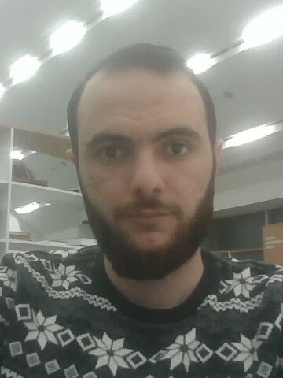

Vladimir Grigoriants
Bioinformatician · computational immunology
I analyse TCR-repertoire, bulk and single-cell RNA-seq data, from raw reads to publication-ready results. PhD student at Skoltech; data analyst in D.M. Chudakov's lab, Pirogov Russian National Research Medical University, Moscow.
- Emailvova.grig2002@gmail.com
- LocationMoscow